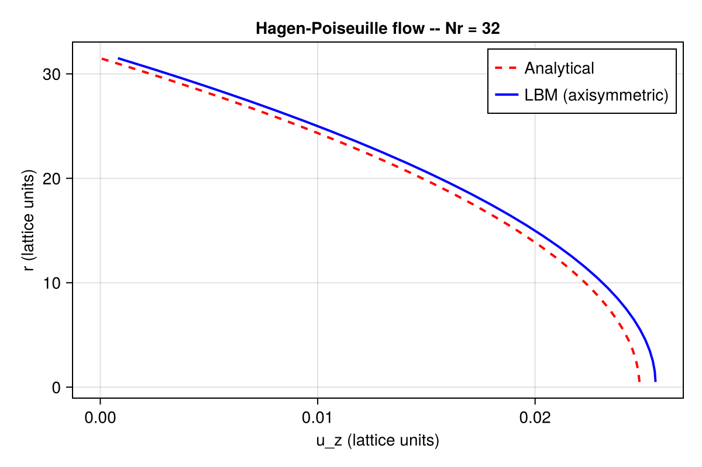
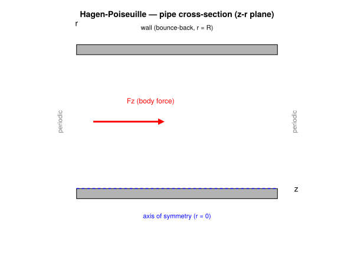
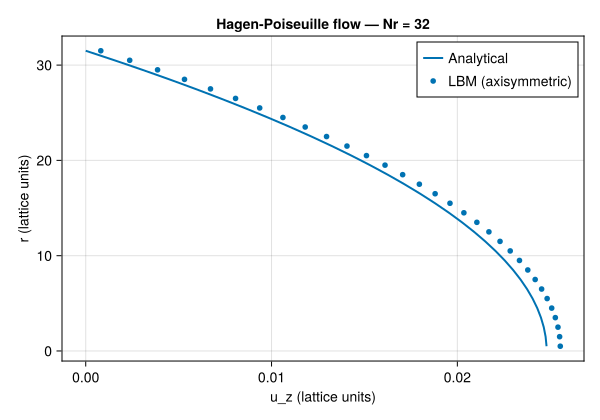

Hagen–Poiseuille Flow (Axisymmetric)
Concepts: Axisymmetric LBM · Body forces
Validates against: analytical parabolic profile $u_z(r) = \frac{F_z R^2}{4\nu}\left(1 - (r/R)^2\right)$
Download: hagen_poiseuille.krk
Hardware: Apple M3 Max, ~10s wall-clock at Nz = 4, Nr = 32

Physical background
Hagen–Poiseuille flow is the steady, fully-developed laminar flow inside a circular pipe driven by a uniform pressure gradient (or equivalently, a body force $F_z$). It is the cylindrical counterpart of 2D Poiseuille flow and produces a parabolic velocity profile:
\[u_z(r) = \frac{F_z}{4\nu}\left(R^2 - r^2\right)\]
where $R$ is the pipe radius, $r$ the radial distance from the axis, and $\nu$ the kinematic viscosity.
This example is special because it is the first axisymmetric case in the Kraken tutorial series. It validates the cylindrical source-term formulation before we apply it to more complex problems like the Rayleigh–Plateau instability.

From 3D pipe to 2D half-plane
A fully 3D pipe simulation would be expensive. For axisymmetric problems (no variation in the azimuthal direction $\theta$), we can work in the meridional half-plane $(z, r)$ with $r \geq 0$.
In practice, Kraken uses a standard D2Q9 lattice where:
- the x-direction maps to the axial coordinate $z$
- the y-direction maps to the radial coordinate $r$
The cylindrical Navier–Stokes equations contain $1/r$ terms that do not appear in Cartesian geometry. In LBM, these extra terms are introduced as source terms added to the collision operator.
Axisymmetric source terms
Two schemes are available in Kraken for the axisymmetric source terms:
Zhou (2011) — simple scheme
The simplest approach adds a source term proportional to the equilibrium distribution:
\[S_i = -\frac{f_i^{(\mathrm{eq})} \, u_r}{r}\]
This captures the leading $1/r$ correction. It is easy to implement but can suffer from reduced accuracy near the axis where $r \to 0$.
Li et al. (2010) — improved scheme
The improved scheme of Li (2010) uses direction-dependent source terms that correctly account for all $1/r$ contributions in both the continuity and momentum equations. It provides higher accuracy, especially near the symmetry axis.
For this validation, we use the Li scheme (:li).
Boundary conditions
The axisymmetric geometry requires two special boundary conditions:
Axis ($r = 0$): specular reflection
At the symmetry axis, we cannot use standard bounce-back. Bounce-back would reverse all velocity components, but symmetry only reverses the radial component while preserving the axial one.
Specular reflection does exactly this: populations travelling upward (away from axis) are reflected to travel downward (toward the axis) without changing their axial momentum. Think of a mirror placed along the axis.
Wall ($r = R$): half-way bounce-back
The outer pipe wall uses standard half-way bounce-back, placing the no-slip wall at $r = R = N_r - 0.5$ (half a lattice spacing beyond the last fluid node).
LBM setup
| Parameter | Value |
|---|---|
| Lattice | D2Q9 in $(z, r)$ half-plane |
| Domain | $N_z = 8$, $N_r = 32$ |
| Axis | Specular reflection at $j = 1$ |
| Wall | Half-way bounce-back at $j = N_r$ |
| Forcing | Axisymmetric Guo scheme, Li (2010) source terms |
| Collision | BGK, $\omega = 1/(3\nu + 0.5)$ |
| $\nu$ | 0.1 |
| $F_z$ | $10^{-5}$ |
The effective pipe radius with half-way BB is $R = N_r - 0.5$. The radial coordinate is $r = j - 0.5$ for lattice index $j$ (where $j = 1$ is the axis).
Simulation
using Kraken
Nr = 32
Nz = 8
ν = 0.1
Fz = 1e-5
ρ, uz, ur, config = run_hagen_poiseuille_2d(;
Nz=Nz, Nr=Nr, ν=ν, Fz=Fz, scheme=:li, max_steps=30000)Results
We extract the axial velocity profile $u_z(r)$ from a cross-section and compare it to the analytical parabola.
R_eff = Nr - 0.5 # effective radius (half-way BB)
j_fluid = 1:Nr # all nodes: axis to wall
r_phys = [j - 0.5 for j in j_fluid] # physical radial coordinate
u_ana = [Fz / (4ν) * (R_eff^2 - r^2) for r in r_phys]
u_num = [uz[2, j] for j in j_fluid] # profile at z = 2The numerical profile matches the analytical parabola closely. Note that the velocity is maximum at the axis ($r = 0$) and vanishes at the wall ($r = R$), as expected.

Error analysis
We compute the relative $L_2$ error between the numerical and analytical velocity profiles:
L2_error = sqrt(sum((u_num .- u_ana).^2) / sum(u_ana.^2))For $N_r = 32$, the error is typically of order $10^{-3}$ — much larger than the Cartesian Poiseuille case. This is expected: the axisymmetric source terms introduce additional discretisation errors, especially near the axis where the $1/r$ terms are largest.
Convergence study
To verify that the axisymmetric formulation maintains second-order spatial convergence, we run the same problem at increasing resolutions:
Nr_list = [16, 32, 64, 128]
errors = Float64[]
for Nr_i in Nr_list
ρ_i, uz_i, _, _ = run_hagen_poiseuille_2d(;
Nz=4, Nr=Nr_i, ν=ν, Fz=Fz, scheme=:li, max_steps=30000)
R_i = Nr_i - 0.5
jf = 1:Nr_i
u_a = [Fz / (4ν) * (R_i^2 - (j - 0.5)^2) for j in jf]
u_n = [uz_i[2, j] for j in jf]
L2 = sqrt(sum((u_n .- u_a).^2) / sum(u_a.^2))
push!(errors, L2)
endIf the error decreases by a factor of 4 each time the resolution doubles, the scheme is second-order accurate (slope 2 on a log-log plot). The Li (2010) source terms are designed to achieve this.
What this test validates
| Component | Validated? |
|---|---|
| Axisymmetric source terms (Li 2010) | yes |
| Specular reflection at the axis | yes |
| Half-way bounce-back at the wall | yes |
| Second-order spatial convergence | yes |
| Cylindrical $(z, r)$ coordinate mapping | yes |
With the axisymmetric formulation validated on this simple parabolic flow, we can confidently apply it to more challenging problems such as axisymmetric jets, Womersley flow, and the Rayleigh–Plateau instability.
References
- Li (2010) — Axisymmetric LBM source terms (improved scheme)
- Zhou (2011) — Axisymmetric LBM (simple scheme)
- Guo et al. (2002) — Discrete forcing scheme
- Kruger et al. (2017) — LBM textbook